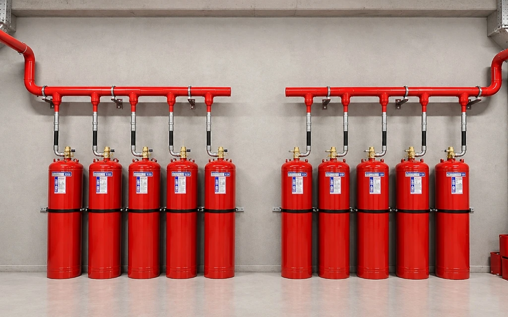

FM200 ve Novec 1230 Gaz Dolum ve Yenileme Hizmeti
Fenix Yangın sertifikalı dolum istasyonunda orijinal HFC-227ea ve FK-5-1-12 temiz gaz dolumu, yüksek saflıkta azot basınçlandırma ve kaçak testleri.

Gramaj Garantili Sertifikalı Dolum İstasyonu
Gazlı yangın söndürme tüplerinde gaz miktarının eksik olması, korunan mahalde yangının sönmemesine; fazla olması ise aşırı basınçtan dolayı boru ve nozul patlamalarına neden olabilir. Fenix Yangın dolum istasyonunda tüm tüpler dijital kantar üzerinde, gramaj hassasiyetiyle doldurulur.
Dolum esnasında kullanılan gazlar %99.9 saflıkta orijinal UL/FM sertifikalı söndürücü ajanlardır. Dolum sonrasında tüpler 99.99% saflıkta kuru azot (N₂) ile 25 bar veya 42 bar süper-basınçlandırılır ve 24 saatlik basınç düşüm testinden geçirilir.
Dolum Süreci Güvenceleri
- Orijinal ve Sertifikalı Gaz Hammaddesi: UL listeli, safiyeti laboratuvar analiz raporuyla kanıtlanmış söndürücü gaz dolumu.
- Hassas Dijital Tartım İstasyonu: Gramaj hassasiyetli endüstriyel tartım platformunda projeye birebir uygun dolum.
- Yüksek Saflıkta Azot Basınçlandırma: 99.99% saflıkta kuru azot (N₂) ile 25, 42 veya 50 bar basınca getirme.
- Elektronik Kaçak ve Sızdırmazlık Testi: Vana contaları, emniyet membranları ve dolum portlarında mikron seviyesinde kaçak denetimi.
- Hidrostatik Test ve Muayene: 10 yıllık periyodu dolan tüplerin yüksek basınç su testi ve gövde sağlamlık onayı.
Nasıl Çalışıyoruz?
5 adımda hatasız, standartlara tam uyumlu ve resmi onay garantili hizmet yönetimi.
Tüplerin Sahadan Güvenli Alımı
Boşalmış veya periyodu gelmiş tüpler Fenix uzman ekibince demonte edilip istasyona taşınır.
Vana ve Gövde Kontrolü
Silindirin pas, çatlak ve mekanik durumu incelenir, vana contaları yenilenir.
Nem ve Hava Tahliyesi
Tüpün içi yüksek vakum pompasıyla sıfırlanarak nem ve kirlilik tamamen arındırılır.
Gaz Transferi ve Azotlama
Otomatik dolum ünitesinde hassas tartımla gaz aktarılır, kuru azotla basınçlandırılır.
Kaçak Testi ve Montaj
24 saatlik basınç düşümü ve kaçak testi sonrası dolum sertifikası ile mahale monte edilir.
İlgili Yangın Söndürme Sistemleri
FM200 Gaz Dolumu
HFC-227ea gaz dolumu, azot basınçlandırma ve sertifikasyon detayları.
Sistemi İncele → İLGİLİ SÖNDÜRME SİSTEMİNovec 1230 Gaz Dolumu
FK-5-1-12 çevre dostu gaz dolumu ve hidrostatik test süreci.
Sistemi İncele → İLGİLİ SÖNDÜRME SİSTEMİFM200 Bakımı
Periyodik silindir seviye ve tartım kontrolü hizmetlerimiz.
Sistemi İncele → İLGİLİ SÖNDÜRME SİSTEMİOda Sızdırmazlık Testi
Dolum sonrası gazın odada kalma süresini doğrulayan Door Fan testi.
Sistemi İncele →Gerçek Saha Çözümlerimiz
Sıkça Sorulan Sorular
Boşalan yangın söndürme tüpü ne kadar sürede doldurulur?
Fenix Yangın dolum istasyonunda standart kapasitedeki FM200 ve Novec 1230 tüpleri 24 ila 48 saat içinde doldurularak, kaçak testleri tamamlanmış halde teslim edilir.
Dolum yapılan gazın orijinal olduğunu nasıl anlarım?
Her dolum işlemimiz için uluslararası akredite üretici analiz sertifikası (Certificate of Analysis) ve parti numarası (batch number) dolum raporunda müşteriye teslim edilir.
Tüplerin hidrostatik test periyodu nedir?
Binaların Yangından Korunması Hakkında Yönetmelik ve basınçlı kaplar standartlarına göre gazlı söndürme silindirleri her 10 yılda bir hidrostatik basınç testine girmek zorundadır.
Yerinde (sahada) gaz dolumu yapılabilir mi?
Hayır. Gaz dolumu vakumlama, hassas kantar ölçümü ve yüksek basınçlı azot transferi gerektirdiğinden yalnızca yetkili dolum istasyonumuzda güvenli şartlarda yapılmalıdır.